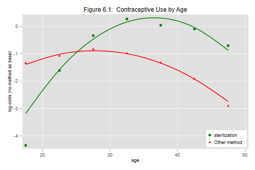

Make sure you read the data as shown in Section 6.1.
. use https://grodri.github.io/datasets/elsalvador1985, clear (Contraceptive Use by Age. Currently Married Women. El Salvador, 1985)
We start with multinomial logit models treating age as a predictor and contraceptive use as the outcome.
Obviously the model that treats age as a factor with 7 levels is
saturated for this data. We can easily obtain the log-likelihood, and
predicted values if we needed them. By default
multinom picks the first response category as the
reference. We take care of that by putting “no method”
first.`’
. mlogit cuse i.ageg [fw=cases]
Iteration 0: log likelihood = -3133.4504
Iteration 1: log likelihood = -2896.9834
Iteration 2: log likelihood = -2875.212
Iteration 3: log likelihood = -2872.9863
Iteration 4: log likelihood = -2872.8993
Iteration 5: log likelihood = -2872.8991
Multinomial logistic regression Number of obs = 3,165
LR chi2(12) = 521.10
Prob > chi2 = 0.0000
Log likelihood = -2872.8991 Pseudo R2 = 0.0832
──────────────┬────────────────────────────────────────────────────────────────
cuse │ Coefficient Std. err. z P>|z| [95% conf. interval]
──────────────┼────────────────────────────────────────────────────────────────
sterilization │
ageg │
20-24 │ 2.738683 .5938369 4.61 0.000 1.574784 3.902582
25-29 │ 4.016289 .5878726 6.83 0.000 2.86408 5.168498
30-34 │ 4.625902 .5884724 7.86 0.000 3.472517 5.779286
35-39 │ 4.394883 .5899471 7.45 0.000 3.238608 5.551158
40-44 │ 4.25889 .5919514 7.19 0.000 3.098686 5.419093
45-49 │ 3.649494 .5950595 6.13 0.000 2.483199 4.815789
│
_cons │ -4.348121 .5810699 -7.48 0.000 -5.486997 -3.209245
──────────────┼────────────────────────────────────────────────────────────────
other_method │
ageg │
20-24 │ .2643798 .1746512 1.51 0.130 -.0779304 .6066899
25-29 │ .5039505 .1779315 2.83 0.005 .1552111 .8526899
30-34 │ .3533908 .1969462 1.79 0.073 -.0326165 .7393982
35-39 │ .0114444 .2145296 0.05 0.957 -.4090258 .4319147
40-44 │ -.5859491 .2616639 -2.24 0.025 -1.098801 -.0730972
45-49 │ -1.571037 .3552017 -4.42 0.000 -2.26722 -.8748549
│
_cons │ -1.335863 .1438881 -9.28 0.000 -1.617879 -1.053848
──────────────┼────────────────────────────────────────────────────────────────
no_method │ (base outcome)
──────────────┴────────────────────────────────────────────────────────────────
. estimates store sat
. scalar ll_sat = e(ll)
Following the notes, we will consider a model with linear and
quadratic effects of age. To this end we define the midpoints of age and
its square. For consistency with the notes we will not center age before
computing the square, although I generally recommend that. We use the
baseoutcome() option to define “no method” as the baseline
or reference outcome.
. gen age = 12.5 + 5*ageg
. gen agesq = age^2
. mlogit cuse age agesq [fw=cases], baseoutcome(3)
Iteration 0: log likelihood = -3133.4504
Iteration 1: log likelihood = -2892.9822
Iteration 2: log likelihood = -2883.158
Iteration 3: log likelihood = -2883.1364
Iteration 4: log likelihood = -2883.1364
Multinomial logistic regression Number of obs = 3,165
LR chi2(4) = 500.63
Prob > chi2 = 0.0000
Log likelihood = -2883.1364 Pseudo R2 = 0.0799
──────────────┬────────────────────────────────────────────────────────────────
cuse │ Coefficient Std. err. z P>|z| [95% conf. interval]
──────────────┼────────────────────────────────────────────────────────────────
sterilization │
age │ .7097186 .0455074 15.60 0.000 .6205258 .7989114
agesq │ -.0097327 .0006588 -14.77 0.000 -.011024 -.0084415
_cons │ -12.61816 .7574065 -16.66 0.000 -14.10265 -11.13367
──────────────┼────────────────────────────────────────────────────────────────
other_method │
age │ .2640719 .0470719 5.61 0.000 .1718127 .3563311
agesq │ -.004758 .0007596 -6.26 0.000 -.0062469 -.0032692
_cons │ -4.549798 .6938498 -6.56 0.000 -5.909718 -3.189877
──────────────┼────────────────────────────────────────────────────────────────
no_method │ (base outcome)
──────────────┴────────────────────────────────────────────────────────────────
. di -0.5*_b[sterilization:age]/_b[sterilization:agesq]
36.46038
. di -0.5*_b[other_method:age] /_b[other_method:agesq]
27.750071
Compare the parameter estimates with Table 6.2 in the notes. As usual with quadratics, it is easier to plot the results, which we do below. The log-odds of using sterilization rather than no method increase rapidly with age to reach a maximum at 36.5. The log-odds of using a method other than sterilization rather than no method, increase slightly to reach a maximum at age 27.8 and then decline. (The turning points were calculated by setting the derivatives to zero.)
The model chi-squared, which as usual compares the current and null models, indicates that the hypothesis of no age differences in contraceptive choise is soundly rejected with a chi-squared of 500.6 on 4 d.f. To see where the d.f. come from, note that the current model has six parameters (two quadratics with three parameters each) and the null model of course has only two (the two constants).
We don’t get a deviance, but Stata does print the log-likelihood. For individual data the deviance is -2logL, and for the grouped data in the original table the deviance is twice the differences in log-likelihoods between the saturated model and this model
. lrtest . sat Likelihood-ratio test Assumption: . nested within sat LR chi2(8) = 20.47 Prob > chi2 = 0.0087
The deviance of 20.47 on 8 d.f. is significant at the 1% level, so we have evidence that this model does not fit the data. We explore the lack of fit using a graph.
Let us do Figure 6.1, comparing observed and fitted logits.
We start with the predict post-estimation command, which
can evaluate logits, with the xb option, or probabilities,
with the pr option, the default.
If you are predicting probabilities you usually specify one output
variable for each possible outcome. If you specify just one variable
Stata predicts the first outcome, unless you use the
outcome() option to specify which outcome you want to
predict.
If you are predicting logits you must do them one at a time, so you will usually specify the outcome you want. Here we compute the logits for sterilization vs no method and for other method vs no method:
. predict fit1, outcome(1) xb . predict fit2, outcome(2) xb
For the observed values we could restore the saturated model and follow the same procedure, but we can also do the calculation “by hand” taking advantage of the fact that the data are ordered by contraceptive use within each age group:
. gen obs1 = log(cases[_n]/cases[_n+2]) if cuse==1 (14 missing values generated) . gen obs2 = log(cases[_n]/cases[_n+1]) if cuse==2 (14 missing values generated)
We plot observed versus fitted logits, using markers for the observed values and smooth curves for the quadratics.
. graph twoway (scatter obs1 age, mc(green)) ///
> (scatter obs2 age, mc(red) ms(t)) ///
> (mspline fit1 age, bands(7) lc(green) lw(medthick)) ///
> (mspline fit2 age, bands(7) lc(red) lw(medthick) ) ///
> , ytitle("log-odds (no method as base)") ///
> title("Figure 6.1: Contraceptive Use by Age") ///
> legend(order(1 "sterilization" 2 "Other method") ring(0) pos(5))
. graph export fig61.png, width(500) replace
file fig61.png saved as PNG format

The graph suggests that most of the lack of fit comes from overestimation of the relative odds of being sterilized compared to using no method at ages 15-19. Adding a dummy for this age group confirms the result:
. gen age1519 = ageg==1 . quietly mlogit cuse age agesq age1519 [fw=cases] . lrtest . sat Likelihood-ratio test Assumption: . nested within sat LR chi2(6) = 12.10 Prob > chi2 = 0.0599
The deviance is now only 12.10 on 6 d.f., so we pass the goodness of fit test. (We really didn’t need the dummy in the equation for other methods, so the gain comes from just one d.f.)
An important caveat with multinomial logit models is that we are modeling odds or relative probabilities, and it is always possible for the odds of one category to increase while the probability of that category declines, simply because the odds of another category increase more. To examine this possibility one can always compute predicted probabilities.
We pursue these issues at greater length in a discussion of the interpretation of multinomial logit coefficients, including the calculation of continuous and discrete marginal effects, in an analysis available here.
Updated fall 2022